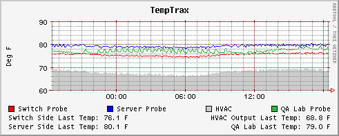
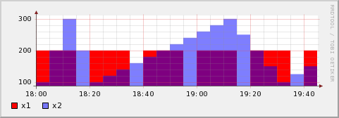
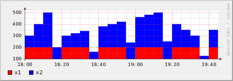

RRDtool : créer ses propre graphiques avec RRDtool
Contents
{kind=link}
1 Introduction
RRDtool est un outil de gestion de base de données RRD (round-Robin database) créé par Tobi Oetiker. Il est utilisé par de nombreux outils open source, tels que Cacti, collectd, Lighttpd, et Nagios, pour la sauvegarde de données cycliques et le tracé de graphiques, de données chronologiques. Cet outil a été créé pour superviser des données serveur, telles la bande passante et la température d'un processeur. Le principal avantage d'une base RRD est sa taille fixe.
RRDTool inclut également un outil permettant de représenter graphiquement les données contenues dans la base.
RRDTool est un logiciel libre distribué selon les termes de la GNU GPL.
J'ai eu recours à utiliser RRD pour grapher l'occupation disque de plusieurs dossiers utilisateurs (ex: /home/users/*).
- Vue d'ensemble sur le fonctionnement d'RRDtool :
- Créer une base vide RRD qui contiendra les données a grapher
- Mettre a jour les données RRD via la commande "rrdtool update" ou via un script
- Générer des des graphs avec la commande "rrdtool graph"
2 Gérer une base RRD
La base RRD utilise un nombre définit d'enregistrements. Tout ajout se place en tête de la base et les autres se décallent petit à petit et ainsi de suite. Il ne peut donc y avoir aucuns débordement puisque c'est controlé. Le seul soucis à tout celà est qu'il faut connaitre le nombre d'enregistrements qu'il va falloir garder. Vous pouvez par exemple vouloir un jour ou un mois, ce qui n'est pas pareil.
2.1 Créer une base
Nous allons dans un premier temps créer la base :
| |
> rrdtool create temptrax.rrd \ --start N --step 300 \ DS:probe1-temp:GAUGE:600:55:95 \ DS:probe2-temp:GAUGE:600:55:95 \ DS:probe3-temp:GAUGE:600:55:95 \ DS:probe4-temp:GAUGE:600:55:95 \ RRA:MIN:0.5:12:1440 \ RRA:MAX:0.5:12:1440 \ RRA:AVERAGE:0.5:1:1440 |
Avec l'argument create, RRDtool va créer la base de donnée qui va contenir tous les camps nécessaire. Cette base ne comprends pour le moment aucunes données. Ensuite :
- temptrax.rrd : c'est le nom de la base de donnée ainsi que son emplacement
- --start N : donne une indication sur le début de graph. Ici j'utilise N pour dire maintenant. Mais je peux utiliser une date au format epoch.
- --step 300 : indique les temps d'intervalle en secondes ou les données arriveront en base (ici 5 min)
- DS : spécifie les différentes sources de données. Ici j'ai 4 sondes de température suivit du nom (DS-Name) que je veux leur affecter.
- GAUGE : C'est un DST (Data Source Type). Il en existe d'ailleurs plusieurs :
| DST Type | Description |
|---|---|
| GAUGE | c'est le plus courant, et généralement le meilleur choix |
| COUNTER | C'est un compteur qui va s'incrémenter en permanence |
| DERIVE | Va enregistrer la dérive de la précédente et de la suivante valeur |
| ABSOLUTE | Enregistre les valeurs et les reset après chaque lecture |
- 600:55:95 : Ces 3 derniers champs signifient :
- 600 : Le heartbeat minimal en secondes (après ce délai, la valeur passera en unknow si la base de donnée n'a rien reçu pendant cette période)
- 55 : Valeur minimale possible (en dehors, la valeur sera unknow)
- 95 : Valeur maximale possible (en dehors, la valeur sera unknow)
- 600:55:95 : Ces 3 derniers champs signifient :
Pour ces 2 valeurs ci dessus, si vous ne savez pas quoi mettre, mettez 'U' pour unknow (ex: DS:probe1-temp:GAUGE:600:U:U)
- RRA : RRA signifie Round Robin Archives. Ce sont comme des vues dans lesquelles les données vont être stockées. Dans chaque base RRD, les RRA sont stockées séparément avec un nombre définit d'enregistrement. A chaque nouvel enregistrement dans la base, on ajoute un PDP (Primary Data Point) qui sera combiné à celui ci et qui sera mis dans notre RRA dans une CF (Consolidation Function). Elle permettra de déterminer la valeur actuelle a écrire.
- MIN: C'est le type de CF que nous utilisons. Il en existe d'autres tel que :
| CF Type |
|---|
| AVERAGE |
| MIN |
| MAX |
| LAST |
- 0.5 : Ceci est un XFF (XFiles Factor) qui est un pourcentage de PDP qui peuvent être en unknow sans recevoir de valeurs à unknow.
- 12 : Ceci est le nombre de PDP qu'il va fabriquer la valeur enregistrée.
- 1440 : C'est le nombre d'enregistrements que le RRA doit contenir.
Résumons : Je créer une base de donnée RRD appellée temptrax.rrd qui va :
- débuter maintenant
- être mise à jour toutes les 5 min
De plus :
- Je possède 4 sources de données différentes avec 1 sonde de type GAUGE.
- Si ma source de donnée n'est pas mise à jour au moins toutes les 10 min et que la valeur n'est pas comprise entre 55 et 95 alors la valeur sera unknow.
J'ai également 3 types de RRA :
- 2 sont pour les valeurs min et max utilisant 12 PDP autorisant 50 % d'entre eux en unknow
- On peut enregistrer jusqu'à 1440 enregistrements
Sachant qu'on met à jour normalement toutes les 5 min, que nous utilisons 12 PDP (chaque mise à jour est un PDP). Ce qui veut dire que :
- nous ajoutons un enregistrement chaque heures (5 mins * 12)
- on fait 1440 enregistrements
Ca nous donne 60 jours (1440/24h) de RRA. Chaque valeur de min et max collectée en PDP sera utilisée comme valeur pour le RRA.
Dans le dernier RRA, nous utilisons une moyenne de PDP collectés, autorisant 50% de unknow, mais nous n'en utilisons qu'un PDP par enregistrement (donc chaque mise à jour). Nous faisons 1440 enregistrements qui signifie que ce RRA enregistrera (1440/12 mise à jour par heures/24h) 5 jours de données.
Dans un prochain cas, nous verrons qu'avec un simple PDP, le CF n'est pas très important et que vous aurez probablement utilisé LAST.
2.2 Mise à jour d'une base
La mise à jour peut suivant les cas être très simple ou très compliqué suivant le type de graphs. Pour l'utilisation, c'est par contre très simple et se caractérise sous cette forme :
| |
rrdtool update <file.rrd> timestamp:val1[:val2:...] |
Généralement cette commande est placée à la fin d'un script qui a récupérer toute les données via SNMP ou autre afin de passer un résultat de retour en argument. Si nous décortiquons la commande, ça nous donne :
- <file.rrd> : l'emplacement avec le fichier rrd
- timestamp : l'heure de mise à jour (comme plus haut, "N" signifie maintenant)
- val1[:val2:...] : les valeurs sont séparées par ":" et il doit y en avoir autant que de DS déclarés et dans l'ordre !
Voici un exemple crado pour mettre des données à jour :
| |
#!/usr/bin/perl # RRD Update Script: update_rrd_temps.pl $HOST = "10.10.0.90"; $PATH = "/home/benr/RRD/TempTrax-RRD"; $NumProbes = 4; for($i=1; $i <= $NumProbes; $i++) { $x = `${PATH}/check_temptraxe -H ${HOST} -p ${i}`; $x =~ s/^.*([0-9.]{4}).*$/$1/; chomp($x); push(@TEMPS,$x); } `/usr/local/rrdtool-1.0.48/bin/rrdtool update ${PATH}/temptrax.rrd "N:$TEMPS[0]:$TEMPS[1]:$TEMPS[2]:$TEMPS[3]"`; |
De plus il faudra mettre en crontab ce genre de script pour mettre à jour automatiquement les données. Sinon, vous pouvez faire une boucle pour mettre à jour (un peu plus crade).
2.2.1 Modifier l'ordre d'insertion des données
Si vous souhaitez modifier l'ordre d'insertion des données, vous pouvez faire comme ceci :
| |
rrdtool update --template ds2:ds1:ds3 |
Cependant, n'oubliez pas que les données déjà insérées ont été entrées dans un ordre bien précis, si vous le changez, l'historique des graphes sera erroné.
3 Générer des graphs
Nous allons utiliser rrdtool graph pour générer un graph depuis notre base de données rrd. Il existe une tonne d'options pour cette commande. Nous ne verrons que les basiques ici. Voici ce que nous allons lancer :
| |
> rrdtool graph mygraph.png -a PNG --title="TempTrax" \ --vertical-label "Deg F" \ 'DEF:probe1=temptrax.rrd:probe1-temp:AVERAGE' \ 'DEF:probe2=temptrax.rrd:probe2-temp:AVERAGE' \ 'DEF:probe3=temptrax.rrd:probe3-temp:AVERAGE' \ 'DEF:probe4=temptrax.rrd:probe4-temp:AVERAGE' \ 'LINE1:probe1#ff0000:Switch Probe' \ 'LINE1:probe2#0400ff:Server Probe' \ 'AREA:probe3#cccccc:HVAC' \ 'LINE1:probe4#35b73d:QA Lab Probe' \ 'GPRINT:probe1:LAST:Switch Side Last Temp\: %2.1lf F' \ 'GPRINT:probe3:LAST:HVAC Output Last Temp\: %2.1lf F\j' \ 'GPRINT:probe2:LAST:Server Side Last Temp\: %2.1lf F' \ 'GPRINT:probe4:LAST:QA Lab Last Temp\: %2.1lf F\j' |
Pour obtenir ceci a terme cela :

{kind=link}
Épluchons un peu ce que ça nous donne :
- mygraph.png : chemin et nom du graphique à générer
- -a PNG : type de fichier image à générer. Par défaut c'est du gif, mais on peut forcer en PNG ou GD.
- --title : Le titre a afficher en haut du graphique
- --vertical-label : Nom à donner l'axe Y des axis
- DEF : Ce sont juste des noms virtuels (vname) que l'on donne aux DS. Il est fortement conseillé d'utiliser des vnames ! En effet, du fait que nous pouvons utiliser plusieurs bases RRD pour faire un graph, si nous avons des DS portant le même nom, il y aura des effets indésirables.
- probe1 : nom du vname
- temptrax.rrd : base de données rrd a traiter
- rrd:probe1-temp : le nom du DS originale
- AVERAGE : Le type de CF qui nous intéresse spécifié dans le RRA
- LINE1|AREA : Ce sont le type de graph que nous souhaitons faire. Pour plus d'exemples cliquez ici pour voir les graphs disponibles.
- probe4 : le vname correspondant
- #35b73d : Couleur de la courbe au format hexadécimal
- QA Lab Probe : Nom de la légende affiché en bas du graph
- GPRINT : Ces lignes permettent de mettre des renseignements supplémentaires en bas du graph. Il est généralement sympa de voir les
- probe1 : le vname correspondant
- LAST : C'est la dernière donnée CF dans la base de donnée (du fait que j'utilise LAST)
- Switch Side Last Temp\: : Ceci est la ligne a affichée en bas du graph
- %2.1lf : permet d'afficher une valeur numérique avec 1 chiffre après la virgule (voir la doc de printf ou sprintf pour toutes les possibilités)
- \j : permet d'avoir un alignement sur la droite
3.1 Différents types de graphs
- Graphique de type LINE :
{kind=link}
Vous pouvez spécifier plusieurs types de lignes (LINE1, LINE2, LINE3, LINE4). Plus ce numéro est élevé, plus la ligne correspondante sera au dessus des lignes de numéro inférieurs.
- Graphique de type AREA :

AREA permet de remplir la partie basse des graphs.
{kind=link}
- Graphique de type STACK :

Permet de superposer les graphs.
{kind=link}
4 Générer des graphs historiques
Le concept est assez simple. Notre base RRD initiale doit récupérer le temps suffisant pour que nous fassions les graphs qui nous intéressent (ex il nous faut au - 3 semaines en base si nous souhaitons faire des graphs sur 3 semaines d'historique).
Seulement voilà, nous allons utiliser 2 nouveaux arguments qui sont --start et --end. Par défaut, les graphs se font sur 24h. En ajoutant ces paramètres, on peut indiquer un début et une fin :
- --end : par défaut c'est now. Et il est généralement pratique de laisser par défaut.
- --start : C'est la date de départ du graph qui peut être spécifier sous plusieurs formats :
- epoch : vous pouvez spécifier la date en secondes depuis le 1er janvier 1970
- jours : vous pouvez spécifier un jour de la semaine "monday" par exemple
- semaines : vous pouvez demander les 2 dernières semaines "-2weeks"
- mois : vous pouvez demander le moins dernier "-1month"
- année : Et pour finir, l'année "-1year"
Bref, la notation est relativement aisée comme vous pouvez le voir. Regardez le man de rrdfetch si vous souhaitez plus d'infos.
5 Exemple
Voici un exemple que je vous propose d'un truc que j'ai développé pour avoir des graphs sur la taille occupée par utilisateur sur leur home (ça rejoint fortement ma doc sur OpenChart). Ce qui va me donner quelquechose comme ceci :
{kind=link}
{kind=link}
5.1 Création de la base RRD
Tous mes scripts sont stockées dans un dossier /etc/scripts/. Donc si vous voulez la jouer à la copier/coller, créez ce dossier.
Donc nous allons créer la base comme ceci :
| |
#!/bin/sh rrdtool create /etc/scripts/rrd_db.rrd \ --start N --step 300 \ DS:user1:GAUGE:750:U:U \ DS:user2:GAUGE:750:U:U \ DS:user3:GAUGE:750:U:U \ DS:user4:GAUGE:750:U:U \ RRA:MIN:0.5:12:720 \ RRA:MAX:0.5:12:720 \ RRA:AVERAGE:0.5:12:720 |
Adaptez donc la partie du nom des utilisateurs et de la base RRD (/stats/rrd_db.rrd) à ce que vous souhaitez.
5.2 Génération d'un fichier de datas
Ensuite on va faire un petit script qui va nous générer un fichier datas qui va pouvoir être repris par OpenChart et par RRD (enfin un truc un peu générique facile à parser quoi).
Idem adaptez les users, les couleurs des users, la source et la destination :
| |
#!/usr/bin/perl -w use strict; no strict "refs"; # Set folder containing all users folder my $source='/home'; my $destination='/var/www/.stats/datas'; # Set all users my @users = ( 'user1', 'user2', 'user3', 'user4' ); # Set color per user my @colors = ( '#000000', '#2d9409', '#4e5fff', '#de1000' ); # Size per user my @ksize; my @printable_size; # Get total size sub get_total_size { my $good_size; open (GET_TOTAL_SIZE, "df -k $source |") or die ("Can't get full size of $source\n"); while (<GET_TOTAL_SIZE>) { if (/\S+\s*(\d*)\s*(\d*).*$source/) { push @users, 'disponible'; push @colors, '#ffffff'; return ($1, $2); } } close (GET_TOTAL_SIZE); } # Calcul userspace size for each users sub get_users_size { my $good_size; my $total_size=shift; my $ref_users=shift; my @users=@$ref_users; foreach (@users) { if (-d "$source/$_") { open (GET_SIZE, "du -sk $source/$_ |"); while (<GET_SIZE>) { chomp $_; if (/(\d*)\s*(\w*)/) { if (($1 / 1024) >= 1000) { # Set Go $good_size = sprintf ("%.1fGo", ($1 / 1048576)); push @printable_size, $good_size; push @ksize, $1; } else { # Set Mo $good_size = sprintf ("%.0fMo", ($1 / 1024)); push @printable_size, $good_size; push @ksize, $1; } } else { $good_size = sprintf ("%.0f", ($1 / $total_size) * 100); push @ksize, $1; } } close (GET_SIZE); } else { push @ksize, 0; push @printable_size, '0Mo'; } } } sub get_free_size { my $total_size=shift; my $busy_size=shift; my $ref_ksize=shift; my @ksize=@$ref_ksize; my $used_ksize=0; sub print_size { my $good_size; if (($_[0] / 1024) >= 1000) { # Set Go $good_size = sprintf ("%.1fGo", ($_[0] / 1048576)); push @printable_size, $good_size; } else { # Set Mo $good_size = sprintf ("%.0fMo", ($_[0] / 1024)); push @printable_size, $good_size; } } foreach (@ksize) { $used_ksize += $_; } # Delete free space values pop @ksize; pop @printable_size; # Add others if needed my $unknow_ksize = ($busy_size - $used_ksize) / 1024; if ($unknow_ksize > 1024) { push @users, 'autres'; $unknow_ksize = sprintf ("%.0f", $unknow_ksize); # Free size my $free_size = ($total_size - $busy_size); push @ksize, $free_size; &print_size($free_size); # Other size push @ksize, $unknow_ksize; &print_size($unknow_ksize); push @colors, '#ff6600'; } return @ksize; } # Write datas sub write_datas_file { my $ref_users=shift; my $ref_ksize=shift; my $ref_printable_size=shift; my $ref_colors=shift; my @users=@$ref_users; my @ksize=@$ref_ksize; my @printable_size=@$ref_printable_size; my @colors=@$ref_colors; open (DATAW, ">$destination") or die "Can't write $destination file : $! my $i=0; foreach (@users) { print DATAW "$users[$i]:$ksize[$i]:$printable_size[$i]:$colors[$i]\n $i++; } close (DATAW); } # Get total partition size and busy size my ($total_size, $busy_size)=&get_total_size; # Get all userspace size &get_users_size($total_size,\@users); # Get free size and unknow size @ksize=&get_free_size($total_size,$busy_size,\@ksize); # Write datas file &write_datas_file(\@users,\@ksize,\@printable_size,\@colors); |
5.3 Mise à jour de la base
Maintenant pour ce qui est de la mise à jour de la base, il va falloir mettre en crontab un script pour la mettre à jour :
| |
#!/usr/bin/perl -w use strict; my $source='/var/www/.stats/datas'; my $destination='/var/www/.stats/rrd_db.rrd'; my @rrd_arg; my $gb_size; open (RRD_DATA, "<$source"); while (<RRD_DATA>) { chomp $_; unless (/disponible|autre/i) { if (/^.*:(\d*):/) { $gb_size=sprintf ("%.1f", ($1 / 1048576)); push @rrd_arg, $gb_size; } } } close (RRD_DATA); @rrd_arg = join ':', @rrd_arg; system "rrdtool update $destination N:@rrd_arg\n"; |
Adaptez ici la source et la destination.
5.4 Génération des graphs
Afin de générer les graphs, il va falloir définir l'emplacement des images. Pour celà adaptez la source, rrd_db et les 2 destinations. Il y aura donc ici 1 image pour le graph du jour et une image pour le graph sur 2 semaines :
| |
#!/usr/bin/perl -w use strict; my $source='/var/www/.stats/datas'; my $rrd_db='/var/www/.stats/rrd_db.rrd'; my $destination_day='/var/www/.stats/usage_day.png'; my $destination_week='/var/www/.stats/usage_week.png'; my @users_lines; my @colors_lines; my @user_size; open (RRD_DATA, "<$source"); my $i=1; while (<RRD_DATA>) { chomp $_; unless (/disponible|autres/i) { if (/(.*):(.*):(.*):(.*)/) { push @users_lines, "'DEF:user$i=$rrd_db:$1:AVERAGE'"; push @colors_lines, "'LINE1:user$i$4:$1 ($3)'"; $i++; } } } close (RRD_DATA); # Generate day graph system "rrdtool graph $destination_day -a PNG --title=\"Utilisation disque par jour\" --vertical-label \"Giga Octets\" @users_lines @colors_lines"; # Generate 2 weeks graphs system "rrdtool graph $destination_week --start -2weeks --end N -a PNG --title=\"Utilisation disque (2 semaines)\" --vertical-label \"Giga Octets\" @users_lines @colors_lines"; |
Là, on a tout ce qu'il faut pour créer, mettre à jour et générer des graphs. On va juste mettre les bons droits d'exécution :
| |
chmod u+rx /etc/scripts/* |
Et finir par définir la crontab :
| |
# Generate graphs */5 * * * * /etc/scripts/gen-piechart-db.pl 2>/dev/null */5 * * * * /etc/scripts/gen-datas.pl ; /etc/scripts/update-rrd.pl ; /etc/scripts/gen-rrd-graph.pl 1> /dev/null |
6 Ressources
http://www.cuddletech.com/articles/rrd/index.html
http://oss.oetiker.ch/rrdtool/
http://www.vandenbogaerdt.nl/rrdtool/tutorial/graph.php